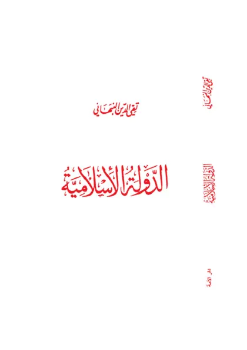

الدولة الإسلامية
The Islamic State
Baca The Islamic State (الدولة الإسلامية) karya Taqiyuddin an-Nabhani secara gratis di Maktabah Ilmu: teks Arab, Indonesia, Inggris. Tanpa daftar, tanpa iklan.
Buka kitab iniLihat lemari ilmuDaftar isi
- Preface
- Introduction
- The Starting Point
- Building the Sahabah
- The Launching of the Da’wah
- Hostility Against the Da’wah
- The Interaction of the Da’wah
- The Two Stages of the Da’wah
- The Expansion of the Da’wah
- The First Pledge of Al-‘Aqabah
- The Da’wah in Madinah
- The Second Pledge of Al-‘Aqabah
- Establishing the Islamic State
- Building the Society
- The Preparation for Jihad
- The Jihad Begins
- Life in Madinah
- Debating the Jews and Christians
- The Battle of Badr
- Managing the Dissension
- The Battle of Al-Ahzab
- The Treaty of Al-Hudaybiyah
- The Battle of Khaybar
- Delegates to the Neighboring Countries
- The Battle of Mu’tah
- Liberation of Makkah
- The Battle of Hunayn
- The Battle of Tabuk
- Dominating the Peninsula
- The Structure of the Islamic State
- The Jewish Attitude Towards
- The Continuity of the Islamic State
- The Domestic Policy of
- The Foreign Policy of
- Jihad to Carry Islam
- Consolidation of the Islamic Conquests
- Molding People into · one Ummah
- Causes & Factors
- The Disintegration of
- The Missionary Invasion
- The Crusaders’ Hatred
- The Effects of the Missionary Invasion
- The Political Siege of the Islamic World
- The Destruction of the · Islamic State
- Preventing the Establishment of the · Islamic State
- The Neglected Duty
- Obstacles in Establishing the · Islamic State
- How the Islamic State · Would Rise (1)
- How the Islamic State · Would Rise (2)
- Glossary